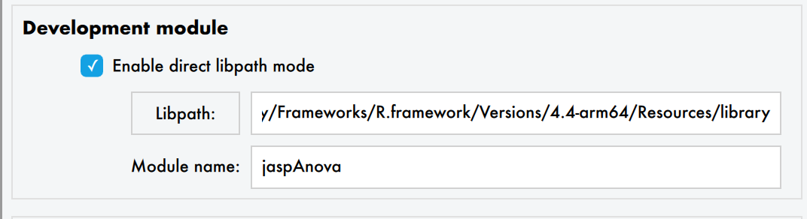
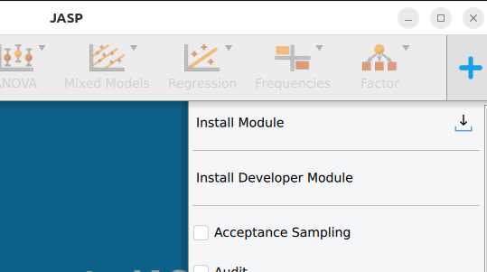
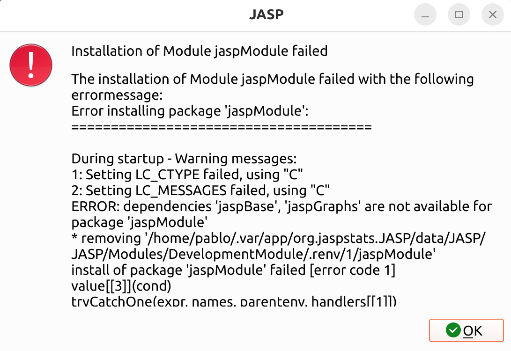

graph LR A[Edit R/QML files] --> B[Recompile module] B --> C[Refresh in JASP] C --> D[Test changes] D --> A
2 Setting Up Your Environment
Install JASP (nightly build)
You need a recent version of JASP to develop modules. Nightly builds include the latest features.
Download the latest nightly build for your platform.
# 1. Install flatpak if needed: https://flatpak.org/setup/
# 2. Add the beta repository
flatpak remote-add --if-not-exists flathub-beta https://flathub.org/beta-repo/flathub-beta.flatpakrepo
# 3. Install JASP beta
flatpak install flathub-beta org.jaspstats.JASP
# 4. Launch in development mode
flatpak run --branch=beta --devel org.jaspstats.JASP
Warning
JASP remembers the branch it was launched from. To switch back to stable: flatpak run --branch=stable org.jaspstats.JASP
If you see runtime/org.kde.Sdk/x86_64/6.7 not installed, fix it with:
flatpak install org.kde.Sdk # choose version 6.7Install and configure Git
Git is a version control system that tracks changes to your code over time. It lets you undo mistakes, work on different features in parallel (via branches), and collaborate with others through platforms like GitHub. All JASP modules are hosted on GitHub, so you’ll need Git throughout your development workflow.
Install Git
Git comes with the Xcode Command Line Tools. Open a terminal and run:
git --versionIf Git isn’t installed, macOS will prompt you to install the tools. Alternatively, install via Homebrew: brew install git.
Download and install from git-scm.com/downloads. The default settings are fine. This also installs Git Bash, a terminal you can use for Git commands.
# Debian/Ubuntu
sudo apt install git
# Fedora
sudo dnf install gitConfigure your identity
Git tags every commit with your name and email. Set these once:
git config --global user.name "Your Name"
git config --global user.email "you@example.org"Create a GitHub account
If you don’t have one yet, sign up at github.com. JASP modules live under the jasp-stats organisation.
Key Git concepts
You don’t need to be a Git expert to develop JASP modules, but a few concepts come up constantly:
| Concept | What it means |
|---|---|
| Repository (repo) | A project folder tracked by Git |
| Clone | Download a copy of a remote repository to your computer |
| Fork | Create your own copy of someone else’s repository on GitHub |
| Commit | Save a snapshot of your changes |
| Branch | A parallel line of development (e.g., feature/my-analysis) |
| Push / Pull | Upload your commits to GitHub / download others’ commits |
| Pull request (PR) | Ask the maintainers to merge your branch into the main project |
Learning resources
- GitHub in 20 Minutes — beginner-friendly video introduction to GitHub
- Git in 15 Minutes — beginner-friendly video introduction to Git
- Git User Manual — the official comprehensive reference
- Pro Git book — free online book, excellent for beginners and advanced users
- GitHub Skills — interactive tutorials for learning Git with GitHub
- Oh My Git! — a game to learn Git visually
For more R packaging, QML, and JASP-specific resources, see the Resources appendix.
For the JASP-specific Git workflow (forking, branching, pull requests), see the Git Workflow chapter. That chapter builds on the basics covered here and explains the day-to-day workflow you’ll use when contributing to JASP modules. The Publishing Your Module chapter covers how to submit your module to the JASP Module Library.
Fork and clone the module template
- Go to jaspModuleTemplate and click Fork.
- Clone your fork:
git clone https://github.com/<your-username>/jaspModuleTemplate.git
cd jaspModuleTemplateAlternatively, fork an existing module from jasp-stats.
Package Management with renv
JASP modules use renv to lock package versions. This ensures that your module builds reproducibly and that collaborators (and CI) use the exact same dependency versions.
Every module repository should contain a renv.lock file. When you start working on a module, bootstrap the renv environment with this script:
# Set your GitHub PAT to avoid rate limits during package installation
Sys.setenv(GITHUB_PAT = "<your PAT>")
# Activate the renv project (or confirm it's already active)
if (is.null(renv::project())) {
message("This isn't an active renv project.")
renv::activate()
} else {
message("We're in an active renv project.")
}
# Install all locked dependencies
message("Restoring/synchronizing the project library.")
renv::restore()
# Install the module itself into the renv library
message("Installing the package.")
renv::install(".")
# Print the library path — you'll need this for JASP developer mode
message("R libPath for developer mode:\n", .libPaths()[1])The last line prints the library path for your newly installed module. Copy this path — you will paste it into JASP’s developer mode settings (see below).
Tip
When you add or update a dependency, run renv::snapshot() to update the lockfile and commit it.
Install your module as an R package
With renv active, the simplest way is:
renv::install(".")Alternatively, from the terminal:
R CMD INSTALL . --preclean --no-multiarch --with-keep.sourceNote the library path where the module is installed — you’ll need it for developer mode. Run .libPaths()[1] in R to see it.
Configure JASP for development
Recommended: renv mode
- Open JASP
- Menu (☰) → Preferences → Advanced
- Check Developer mode
- Check Enable renv mode
- Set the libpath where you installed the module
- Enter the module name (as listed in
DESCRIPTION)

- Go back to the main JASP window
- Click the + icon (top-right) → Install Developer Module

GitHub Personal Access Token
If module installation fails with rate-limiting errors:

Create a GitHub Personal Access Token (no special permissions needed — it just identifies you as a legitimate user).
In JASP: Preferences → Advanced → uncheck Use default PAT for Github → paste your token → press Enter/Tab.
The development cycle
- Edit your R and/or QML files in your editor of choice
- Recompile:
R CMD INSTALL . --preclean --no-multiarch --with-keep.source - Refresh: in JASP, click + → find your module → click the blue refresh button (🔄)
You must recompile to see changes — JASP loads from the installed package in the renv library.
Tip
Start with the QML interface before writing the R analysis. This lets you iterate on the UI quickly and see option names before writing the backend code.